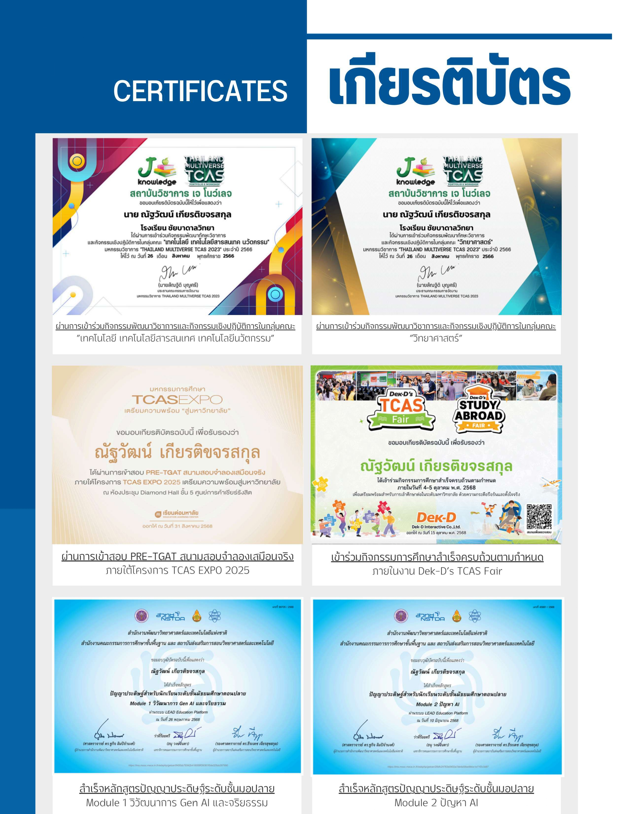
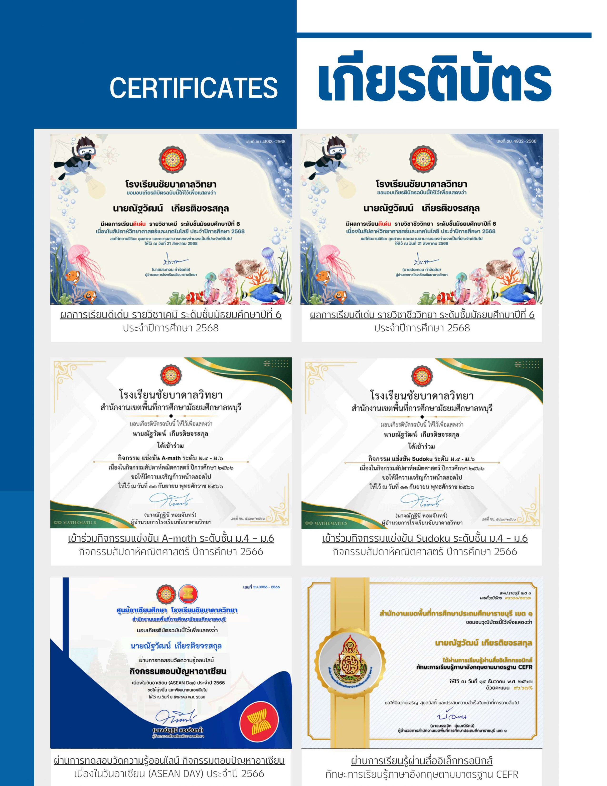

My First Learning Portfolio

ABOUT ME
สวัสดีครับ ผมนายณัฐวัฒน์ เกียรติขจรสกุล (ไอซ์) รหัสนักศึกษา 6909546043
คณะวิทยาศาสตร์และเทคโนโลยี สาขาวิทยาการคอมพิวเตอร์ ชั้นปีที่ 1
เป็นนักศึกษา นักล่าปริญญาธรรมดาคนนึง
What I Built
งานนี้เป็นเว็บไซต์ Learning Portfolio แบบหน้าเดียว ที่แสดงเกียรติบัตรต่างๆ ของผมในช่วง
ม.ปลายครับ
โดยมีส่วนประกอบสำคัญคือ ตัวเกียรติบัตรพร้อมคำอธิบายแบบสั้นๆ ใต้รูป
ในการเปิดเว็บไซต์จากเครื่องของตัวเองโดยตรง จะถือว่ามีเพียง Client (เว็บบราว์เซอร์) ที่ทำหน้าที่อ่านและประมวลผลไฟล์ แต่จะไม่มี Server เกิดขึ้น เพราะเบราว์เซอร์ดึงข้อมูลจากฮาร์ดดิสก์โดยตรงไม่ได้ผ่านเครือข่ายอินเทอร์เน็ตครับ
How I Built It
ผมเริ่มต้นจากการวางโครงกับเลย์เอาต์ภาพรวมของหน้าเว็บก่อน ว่าจะให้ตัวรูปภาพ ตัวข้อความอยู่ตรงไหนบ้าง
จากนั้นผมค่อยเริ่มเขียนตัวโครงสร้างด้วย HTML แบบพยายามใช้แท็กให้ถูกต้อง
ต่อด้วยเขียนไฟล์ CSS แยกต่างหากเพื่อใส่สีสัน กำหนดระยะห่างให้ตัวเว็บดูน่าอ่านขึ้น
เครื่องมือที่ใช้คือ VS Code ครับ และก็ศึกษาแท็กเพิ่มเติมจากสไลด์อาจารย์, W3Schools หรือใช้ AI มาช่วยอธิบายการทำงานของโค้ดบางตัวเพื่อให้ได้ความเข้าใจที่ลึกซึ้งขึ้น
Reflection
- ปัญหาและความท้าทายที่เจอ: ช่วงแรกงงเรื่องใส่ Path รูปกับวิดีโอครับ บางทีเปิดแล้วรูปไม่ขึ้นเพราะพิมพ์ที่อยู่โฟลเดอร์ผิด เลยแก้ด้วยการจัดไฟล์แยกเข้าโฟลเดอร์ media/ กับ css/ ให้เป็นระเบียบ แล้วค่อยๆ เช็ก Relative Path ทีละจุดจนใช้ได้ปกติครับ
- สิ่งที่เข้าใจมากขึ้น: เข้าใจการทำงานของ HTML กับ CSS ชัดขึ้นครับ รู้ว่า HTML คือการขึ้นโครงสร้าง ส่วน CSS คือการเอามาตกแต่ง ใส่สี จัดระยะห่างให้เว็บน่าอ่านมากขึ้น
- สิ่งที่อยากปรับปรุงต่อ: อยากลองนำพวกงานอินโฟกราฟิกหรือวิดีโอที่ตัดต่อเองมาจัดวางในเว็บให้ดูลงตัวกว่านี้ แล้วก็อยากลองจัด Layout หน้าเว็บให้ดูน่าสนใจขึ้นครับ
Reflection
- ปัญหาและความท้าทายที่เจอ: ช่วงแรกงงเรื่องใส่ Path รูปกับวิดีโอครับ บางทีเปิดแล้วรูปไม่ขึ้นเพราะพิมพ์ที่อยู่โฟลเดอร์ผิด เลยแก้ด้วยการจัดไฟล์แยกเข้าโฟลเดอร์ media/ กับ css/ ให้เป็นระเบียบ แล้วค่อยๆ เช็ก Relative Path ทีละจุดจนใช้ได้ปกติครับ
- สิ่งที่เข้าใจมากขึ้น: เข้าใจการทำงานของ HTML กับ CSS ชัดขึ้นครับ รู้ว่า HTML คือการขึ้นโครงสร้าง ส่วน CSS คือการเอามาตกแต่ง ใส่สี จัดระยะห่างให้เว็บน่าอ่านมากขึ้น
- สิ่งที่อยากปรับปรุงต่อ: อยากลองนำพวกงานอินโฟกราฟิกหรือวิดีโอที่ตัดต่อเองมาจัดวางในเว็บให้ดูลงตัวกว่านี้ แล้วก็อยากลองจัด Layout หน้าเว็บให้ดูน่าสนใจขึ้นครับ
My Certificates

